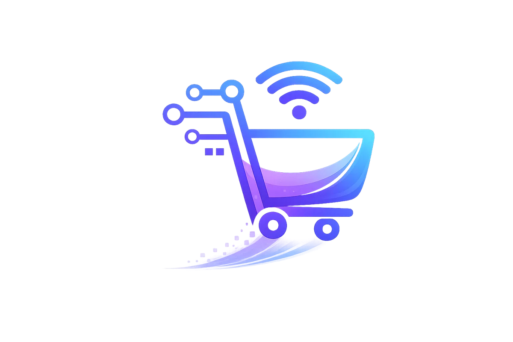

Venda continua depois do clique
Pedidos e etapas da operação ficam organizados em um fluxo que a equipe consegue acompanhar.
Centralize vendas, pedidos, estoque, financeiro, clientes e regras específicas sem obrigar a equipe a montar o processo em várias ferramentas desconectadas.

A Loja Inteligente nasce para concentrar partes da operação que normalmente ficam espalhadas entre planilhas, sistemas genéricos e controles paralelos. O objetivo é fazer informação e rotina seguirem o mesmo fluxo.
Pedidos e etapas da operação ficam organizados em um fluxo que a equipe consegue acompanhar.
Movimentações e visão de estoque deixam de existir como um controle isolado do restante da operação.
A leitura financeira ganha valor quando está ligada ao que aconteceu em vendas e operação.
O sistema pode crescer em etapas, priorizando o que resolve mais atrito primeiro.
O painel real concentra visão financeira e indicadores operacionais no mesmo ambiente. A ideia não é criar um dashboard bonito isolado, e sim fazer o painel refletir rotinas que estão acontecendo por baixo dele.
A tela resume sinais importantes sem obrigar a equipe a juntar manualmente dados de várias fontes antes de entender o que está acontecendo.
Quando os módulos compartilham a mesma lógica, uma informação pode continuar seu caminho sem precisar ser digitada, conferida ou reinterpretada em toda etapa.
Uma entrada comercial inicia ou atualiza o fluxo.
A operação passa a enxergar disponibilidade e movimentação no mesmo contexto.
Os números deixam de ficar desconectados do que gerou a movimentação.
Informações comerciais podem permanecer ligadas ao histórico da operação.
A visão geral resume o estado do negócio para apoiar a próxima decisão.
Nem toda empresa precisa dos mesmos módulos na mesma ordem. A primeira versão deve atacar o gargalo principal e criar uma base que possa evoluir sem reconstruir tudo.
Começamos pelo fluxo que mais consome tempo, gera retrabalho ou concentra risco operacional.
Campos, estados e decisões podem ser modelados conforme o processo real, em vez de depender só de padrões genéricos.
O ganho aparece quando vendas, estoque, financeiro e clientes deixam de ser ilhas.
Novas necessidades entram com base no que a equipe realmente utiliza depois do go-live.
A conversa começa pela operação atual e pelo gargalo. A lista de funcionalidades vem depois.
Não. A proposta é trabalhar com uma base operacional modular e evoluir módulos e regras conforme a necessidade real do negócio.
Sim. Esses são alguns dos núcleos operacionais que o sistema pode reunir em um mesmo fluxo.
Sim. A arquitetura modular permite priorizar a primeira entrega e adicionar novas rotinas conforme o uso e as necessidades aparecem.
Podem ser avaliadas quando as plataformas envolvidas oferecem meios seguros de integração e o ganho operacional justifica a conexão.
Mapear vendas, estoque, financeiro e controles paralelos já é suficiente para descobrir qual módulo deve entrar primeiro.
Conversar sobre o sistema ↗